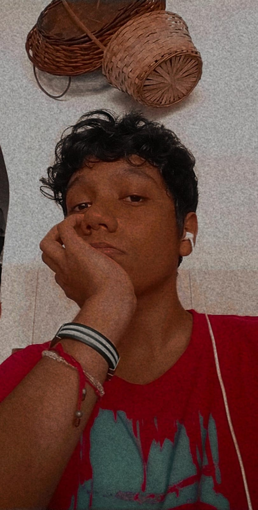

| Datos mios de pequeño | Foto mia de pequeño |
|---|---|
Naci el 12 de julio del 2005, soy del pais de Mexico, Estado San Luis Potosi, de la ciudad de Mexico, bueno anexe una foto mia en esta foto tengo 1 año, fue justo en mi cumpleaños, y si, estoy llorando en la foto ya que por lo que me comento mi familia no queria estar ahi, en ese entonces, mi color de piel era clara, ya que mi mama es una persona de tez clara, me comentaron que cuando era un niño, me gustaba mucho jalar orejas, por eso tenian que tener cuidado al cargarme, ya que lo primero que hacia era intentar tomar la oreja para poder jugar con ella, un dato extraño lo se, cuando era bebe vivia en otra casa, me mude a donde actualemte vivo cuando tenia 3 años, claramente no recuerdo el dia de la mudanza. |
| Datos mios de cuando tenia 4-6 años | Foto mia de esa edad |
|---|---|
Bueno para esta foto tenia 6 años, me encontraba en la graduacion, justo un año anterior osea cuando tenia 5 años, fue que mi miedo por las inyecciones nacio, al igual a esta edad me empezaron a gustar los videojuegos, jugaba en las tardes cuando mi hermano no jugaba en la consola, tambien se empezo a generar mi gusto por la musica, en especial las canciones con requinto o una base de fondo que sea pura guitarra, por estos gustos empeze a intentar tocar un poco de guitarra, pero no pude mas que hacer un acorde, por la desesperacion la deje a los 3 dias, me arrepiento pero no se puede hacer nada, justo cuando me gradue del kinder fue la primera vez que pude salir de valles, fui a Rioverde donde nacio mi abuelita y Mama,no genere problemas ya que desde niño soy alguien tranquilo y callado, hablaba pocas veces en el salon, de hecho mi primer dia de clases no queria ni ingresar al kinder, llore en la puerta durante una hora por que no queria dejar a mi mama. |
| Datos mios de 6-12 años | Foto mia de esa edad |
|---|---|
Bueno para esta foto tenia 11 años, es la foto de mi graduacion de la primaria, bueno sinceramente mi tiempo de estudio que menos me gusto fue la primaria, nunca obtuve a alguien al que le pudiera decir "amigo", algo es que no es que no quiera socializar, simplemente no sabia como, siempre fui un poco difente a los niños de mi edad, no por algun don o alguna cualidad, solo que desde niño mi atraccion por los libros y los videojuegos me llamaban mas la atencion, asi que no sabia como sacar conversacion con los niños ya que mis gustos siempre eran muy diferentes a los niños de mi edad, aunque gracias a la primaria fue que me empezo a gustar la musica clasica, gracias a uno de mis juegos llamados "Fallout" ya que las radios en este juego solo tenia musica clasica, al igual a esta edad desarrolle mi gusto por el dibujo, de hecho hubo un tiempo donde deje los videojuegos solo para poder seguir practicando mi tecnica de dibujo, mi hermano y un primo siempre fueron excelentes dibujantes, esto me motivaba a poder seguir mejorando aunque solamente hacia trazos muy simples a esa edad. |
| Datos mios de cuando tenia 12-14 años | Foto mia de esa edad |
|---|---|
Bueno esta imagen es mas reciente ya que tenia 14 años cuando me tome esta foto, la secundaria sin lugar a dudas fue lo que mas disfrute, encontre a personas que compartian gustos similares a los mios, y aparte me pude hacer una persona mas abierta y menos callado, aprendi a tocar la guitarra y me siento orgulloso ya que la mayoria lo aprendi por mi cuenta viendo videos en Youtube, al igual mi pasion por los libros solo aumento pero la de los videojuegos disminuyo, obtuve amigos que a dia de hoy les sigo hablando y aveces quedamos para jugar algun juego online, a la de edad de los 13 años fue cuando me empezaron a atraer las pulseras, cadenas y anillos, recuerdo que todo empezo cuando me dieron un anillo que tenia mi nombren grabado, me encanto la estetica que tenia, tambien me empeze a dejar el pelo un poco mas largo ya que todos mis años lo habia tenido corto, me cortaba el pelo cada 2 meses, despues de un berrinche como niño pequeño mi mama me dejo jejeje. |  |
| Datos mios de cuando tenia actual 15-16 años | Foto mia de esa edad |
|---|---|
Bueno esta foto es de aproximadamente 5 meses, en el paso del tiempo de mis 14 a mis 16 años no hubo mucho cambio en mi, creci un poco de estatura pero nada increible, aumento mas mi gusto por la guitarra y mi gusto por la lectura, deje casi de jugar videojuegos, solo juego los sabados y domingos, al igual los Lunes, Miercoles y Viernes voy a club de ajedrez ya que lo quice retomar, intento ser responsable con mis obligaciones como la escuela y otras cosas de casa, y este año le estoy empezando a agarrar gusto a la programacion, me genera una buena sensacion que los codigos que hago salgan bien, sinceramente no mucho que hablar como dije anteriormente no hubo demasiados cambios en mi, solo que desarrolle un gusto por un genero musical llamado "lofi" y algunas canciones en japones, y claro lo dicho anteriormente aunque esos solo son cambios diminutos. |